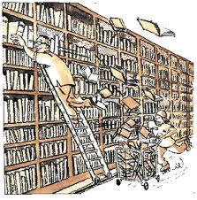

Een lijstje met onze recente (en komende) activiteiten.

| 2019 | |
|---|---|
| 14 apr | Optreden tijdens het Korenfestival Jisp |
| vr-zo 26-28 apr | Concerteis naar Gent - verblijf in hotel Monasterium PoortAckere; uitwisseling met plaatstelijk wereldkoor Karibu; gezamelijk openbaar optreden zondag onder de Stadshal in het centrum van Gent |
| wo 26 juni | Optreden in muziektent in Agathapark te Krommenie |
| za 29 juni | Deelname aan Hofjesconcerten in Haarlem |
| wo 10 juli | Seizoensafsluiting in de Palmboom |
| za 14 sep | Zingen tijdens de vernisage in de PKN Kerk te Uitgeest tbv Jubileumexpositie Janna van Zuijlen |
| za 18 sep | Proefzingen in de doopsgezinde Vermaning te Krommenie |
| wo 25 sep | Proefzingen in buurthuis De Lorzie in Wormerveer |
| wo 16 okt | Proefzingen in het lokaal van muziekvereniging Crescendo te Assendelft |
| za 2 nov | Optreden tijdens Saens Korenfestival te Wormerveer |
| zo 15 dec | Optreden bij winterconcert harmonie Apollo in de Kogerkerk in Zaandijk |
| wo 18 dec | Dit jaar wordt ons kerstconcert in de Nicolaaskerk te Krommenie opgeluisterd door het Zwarte Zee Kwartet |
| 2018 | |
| 24-25 mrt | Koorweekend in de Banjaert te Wijk aan Zee met als thema "Cȏte Exotique in Wijk aan Zee" |
| za 7 apr | Reis naar en Concert in Heerenveen samen met koor Reade Hoeke in het kader van de uitwisseling |
| mrt | Drie keer een uur extra aandacht voor de tenoren onder leiding van de dirigent |
| za 21 april | Optreden tijdens het Saens korenfestival georganiseerd door het Zaans vrouwenkoor Chemistry te Wormerveer |
| zo 9 sep | Optreden in verpleeg- en verzorgingshuis Rosariumhorst te Krommenie |
| sep&okt | Vier keer een uur extra aandacht voor de altengroep onder leiding van de dirigent |
| zo 7 okt | Kinderzangprogramma met kleinkinderen van kaskediezers/sters verzorgt door onze dirigent |
| nov | Twee keer een uur extra aandacht voor de sopranen onder leiding van de dirigent |
| wo 19 dec | Als ieder jaar ons kerstconcert in de Nicolaaskerk te Krommenie met wederom als solisten Erica Roozendaal (accordeon) en Bert Vos (viool) van de The Klezmer Society |
| ma 24 dec | Kaskedieze zingt tijdens de kerstnachtviering in de Nicolaaskerk te Krommenie |
| 2017 | |
| 25-26 mrt | Koorweekend in de Banjaert te Wijk aan Zee met als thema "Hier is de Lente" |
| zo 9 apr | Deelname aan het korenfestival in Jisp |
| za 20 mei | Optreden tijdens het Saens korenfestival georganiseerd door het Zaans vrouwenkoor Chemistry te Wormerveer |
| zo 3 sep | Optreden in dorpstaveerne Koppie te Assendelft |
| wo 6 sep | Buitenconcert in Wormer |
| za 14 okt | Concert samen met koor Raede Hoeke uit Heerenveen (Friesland) in de kerk aan het Noordeinde in Wormerveer |
| nov&dec | Vier keer een uur extra aandacht voor de mannengroep onder leiding van de dirigent |
| wo 20 dec | Als ieder jaar ons kerstconcert in de Nicolaaskerk te Krommenie met als solisten Erica Roozendaal (accordeon) en Bert Vos (viool) van de Shtetl Band Amsterdam |
| 2016 | |
| za 2 jan | Nieuwjaarsconcert in verzorgingshuis Guisveld van Evean te Zaandijk |
| zo 20 mrt | Concert samen met Alkmaars Straat Orkest in de zaal bij Café De Zon in Wijk aan Zee |
| za 23 apr | Optreden tijdens het Saens korenfestival georganiseerd door het Zaans vrouwenkoor Chemistry te Wormerveer onder het thema VINYL |
| apr-mei-jun | Vijf keer een half uur verwennerij voor de mannengroep onder leiding van de dirigent |
| wo 18 mei | Optreden ter opluistering van een vernissage in het Gemeentehuis van Uitgeest |
| 3-5 juni | Koorweekend in het Hunehuis te Darp nabij Havelte in Drenthe met workshop Griekse muziek |
| zo 3 jul | Inloopconcert in de Oude Ursulakerk te Warmerhuizen |
| do 17 nov | Optreden voor Vrouwen van Nu in Torenerf te Wormer |
| zo 18 dec | Kerstconcert in de Rosariumhorst, samen met Grieks orkest Talania |
| wo 21 dec | Als ieder jaar ons kerstconcert in de Nicolaaskerk te Krommenie, dit jaar met Grieks orkest Talania |
| 2015 | |
| 11 jan | Optreden tijdens Korendag in Paradiso in de Grote Zaal |
| 14 mrt | Optreden tijdens Open Dag Palmboom om het open blijven van dit activiteiten centrum en onze repetitieruimte te vieren |
| 22 mrt | Optreden op zondagmorgen in de prachtige ridderzaal van het kasteel Radboud te Medemblik |
| 28-29 mrt | Koorweekend in de Banjaert te Wijk aan Zee (met zangworkshops door Annet Lans en Cecile Roovers van het Nederlands Kamerkoor) |
| 12 apr | Optreden tijdens het korenfestival in Jisp |
| 3 mei | Optreden in verzorgingshuis Rosariumhorst te Krommenie |
| 13 sept | Optreden tijdens Korenlint in Haarlem |
| 14+21 okt, 4+11 nov | Workshops tijdens 4 repetitieavonden voor de koorleden per stemgroep ter verbetering van de koorklank olv professionele krachten |
| 1 nov | Zondagmiddagconcert in dorpshuis De Horn in Krommeniedijk met het Alkmaars Straat Orkest |
| 14 nov | Optreden tijdens concert varié van de Bond van Zangkoren in Noord-Holland |
| 22 nov | Optreden tijdens het ZondagMiddagPodium in Heemskerk in buurtcentrum De Schuilhoek |
| 13 dec | Optreden in de Nicolaaskerk te Krommenie ter opluistering van de kerstmarkt |
| 16 dec | Als ieder jaar ons kerstconcert in de Nicolaaskerk in Krommenie met wederom optreden van Trio C tot de derde |
| 2014 - 25-jarig jubileum! | |
| 15-16 mrt | Filmweekend in de Banjaert te Wijk aan Zee om Youtube filmpjes op te nemen |
| 30 mrt | Optreden bij voorjaarsconcert van Harmonie Apollo in de Kogerkerk in Koog aan de Zaan |
| 17 mei | Optreden met Wereldmuziekkoor Nijmegen (bestaat 10 jaar) in de Maria Magdalena kerk te Wormer |
| 26 juni | Afsluiting seizoen in de Grote Weiver te Krommenie met presentatie van de films gemaakt in het weekend afgelopen maart - onder luid applaus |
| 7-11 juli | Zangweek in de Paasheuvel te Vierhouten, met workshops zangvorming (olv Cecile Roovers en Annet Lans - beide van het Nederlands Kamerkoor, en onze dirigent Jules Bart), veel repetities en concert in het Openluchttheater met Duo Balqana |
| 14 sept | Korenlint Haarlem, waar Kaskedieze optreedt in de St Jozefkerk en in de Grote Bavo kerk |
| 5 okt | Optreden samen met Wereldmuziekkoor Nijmegen in Kapel Onder de Bogen in Park Dekkerswald tussen Nijmegen en Groesbeek |
| 16 dec | Als ieder jaar ons kerstconcert in de Nicolaaskerk in Krommenie met optreden van Trio C tot de derde |
| 20 dec | Opluistering van de vernissage van Ger Zaagsma in het Molenmuseum te Koog a/d Zaan |
| 2013 | |
| do 21 mrt | Concert met veel Russische liederen op obs De Zoeker bij de afsluiting van hun Russische project |
| 5-7 apr | Koorweekend in natuurvriendenhuis De Banjaert te Wijk aan Zee - op naar een traditie? Met een zangworkshop door Cecile Roovers van het Nederlands Kamerkoor. |
| zo 21 apr | Korendag Jisper kerk |
| zo 2 juni | Zomerconcert samen met Shantykoor Zilt - met Barcarole als uitsmijter |
| za 10 aug | Busreis naar en optreden tijdens havenfeest in Leer (Duitsland) |
| za 14 sept | Optreden in de intieme Lutherse kerk en in de grote St. Josephkerk tijdens Korenlint Haarlem |
| za 5 okt | Een "Rawhide" stijl optreden tijdens Zingen aan Zee te Zandvoort |
| zo 20 okt | Optreden in het Molenmuseum te Koog a/d Zaan ter opluistering van een expositie over cultureel leven in de Zaanstreek |
| zo 15 dec | Optreden tijdens Kerstmarkt in centrum van Krommenie |
| wo 18 dec | Kerstconcert in de Nicolaaskerk te Krommenie, wederom met optreden van Duo Balqana |
| zo 22 dec | Kerstconcert in verzorgingshuis Rosariumhorst te Krommenie |
| 2012 | |
| zo 18 mrt | Concert "Over de wereld zeeën" met shantykoren Zilt uit Wormerveer en De Rietpollers uit Spaarndam in de Maartenkerk (Lutherse kerk) te Zaandam |
| vr 30 mrt - zo 1 april | Koorweekend in natuurvriendenhuis De Banjaert te Wijk aan Zee |
| zo 15 apr | Korenfestival in het Jisper kerkje |
| zo 3 juni | Koreninstuif in de Koger Vermaning tijdens het Zaans Cultuurfestival |
| zo 9 sept | Korenlint Haarlem - optredens in Stedelijk Gymnasium en Wilhelminakerk |
| za 6 okt | Korendag Hillegom in de Maartenskerk |
| wo 19 dec | Kerstconcert in de Nicolaaskerk te Krommenie met optreden van Duo Balqana |
| bestaande uit Monique Lansdorp (viool) en Hans Derksen (accordeon) | |
| zo 23 dec | Optreden voor de bewoners van verzorgingshuis Rosariumhorst te Krommenie |
| 2011 | |
| 25-27 mrt | Koorweekend in het Broederschapshuis te Schoorl |
| zo 3 apr | Voorjaarsconcert met Harmonie Apollo in de Kogerkerk, Koog a/d Zaan |
| zo 15 mei | Deelname aan Korenfestival in de Vermaning te Wormerveer als start van de Week van de AmateurKunst in de Zaanstreek |
| zo 22 mei | Deelname aan Korendag in de Jisperkerk |
| za 25 juni | Deelname aan Open Podium voor wereldkoren tijdens Koorbiënnale te Haarlem |
| zo 11 sept | Deelname aan Korenlint in Haarlem |
| wo 26 okt | Workshop Georgische zang o.l.v. Lali Khandolishvili in de Palmboom te Krommenie |
| za 5 nov | Optreden bij volksdansjubileum An Benjamin in buurthuis De Horn te Krommeniedijk |
| za 17 dec | Optreden voor de bewoners van verzorgingshuis Rosariumhorst te Krommenie |
| wo 21 dec | Ons jaarlijks Kerstconcert in de Nicolaaskerk te Krommenie |